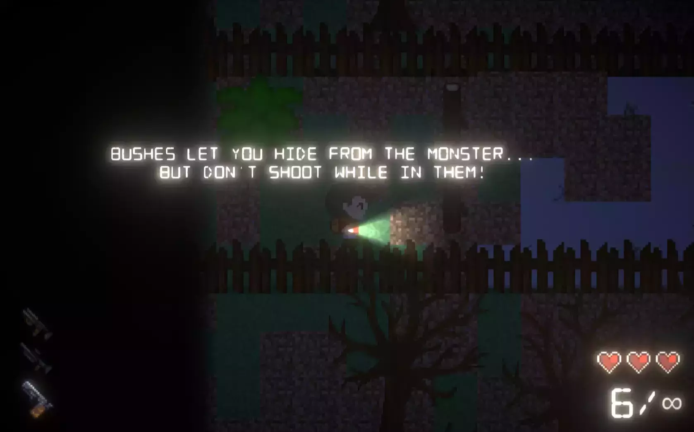
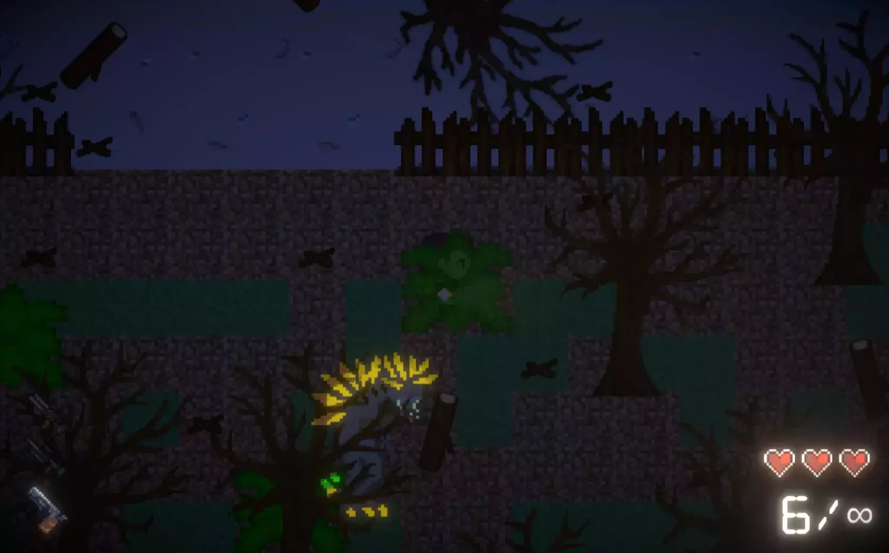
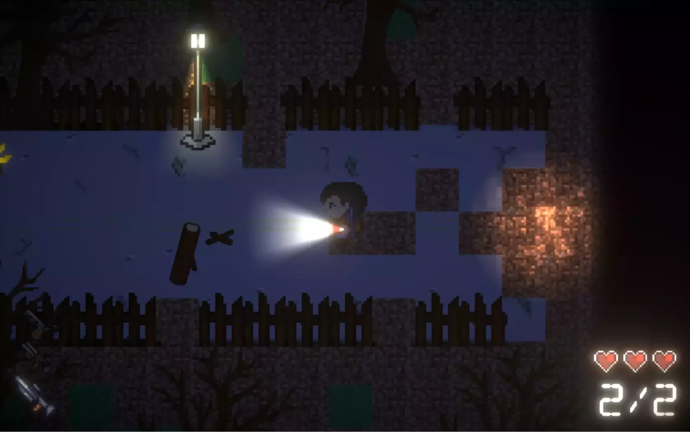
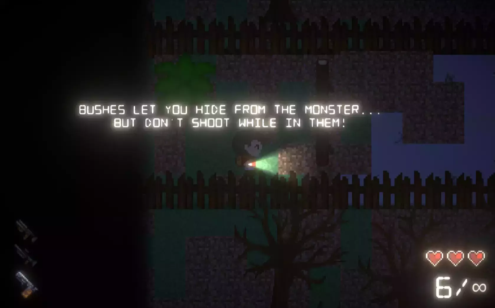
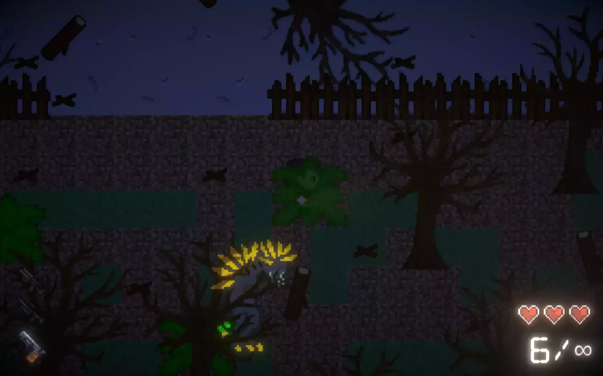
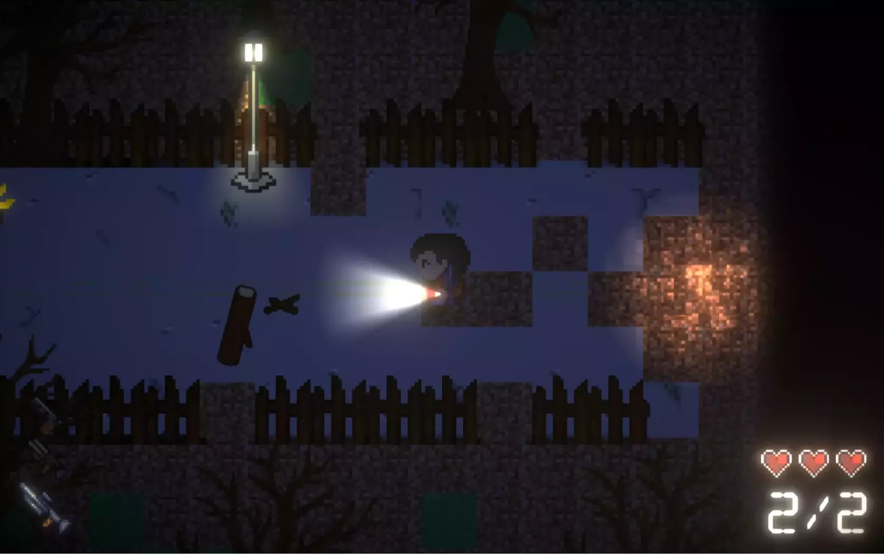

Tory
Creators: Augusto Mota Pinheiro & others
Start Date: ~ 04/2020
End Date: ~ 05/2020
Medium: Unity
In Tory, players have to explore their surroundings, interact with the game
environment, and study the enemy’s behavior to play at their best. However, just knowing how the
game works is not enough, as it will take multiple attempts to master the mechanics and complete
the level. The difficulty of the game encourages players to never give up, to try new
strategies, and to be resourceful with what is offered to them.
The game was created for "The Art of Game Design" course at Dawson College, based on
Generations, by Alfred Hayden.
My roles, in our team of 4, were: Main Programmer + Game Designer.
Team:
- Brian Kang (Artist)
- William Pak (Paperwork Manager)
- Paul Terrado (Level Designer)
You can play the game here!
More information about the project and the process on this blog
post!
Gun Pack by Viktor
Hahn
Music: Sad Story Bro, by Antti
Luode